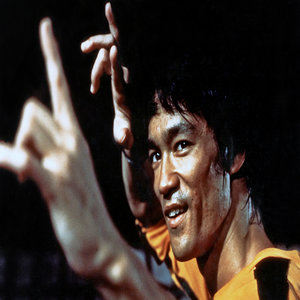
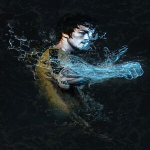
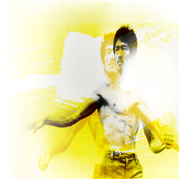

Bruce Lee
Bruce Lee was a famous martial artist, actor, and philosopher who was born on November 27th, 1940 in Chinatown, San Francisco. Lee was raised in Hong Kong, but returned to the United States for college where he studied philosophy at the University of Washington.
Bruce Lee began teaching martial arts and opened his own school where he trained some of Hollywood’s leading men. It was during this time that Lee was cast in The Green Hornet and began an acting career that included several famous martial arts movies such as Way of the Dragon and Enter the Dragon.
“I am learning to understand rather than immediately judge or to be judged. I cannot blindly follow the crowd and accept their approach. I will not allow myself to indulge in the usual manipulating game of role creation.
Fortunately for me, my self-knowledge has transcended that and I have come to understand that life is best to be lived and not to be conceptualized. I am happy because I am growing daily and I am honestly not knowing where the limit lies.
To be certain, every day there can be a revelation or a new discovery. I treasure the memory of the past misfortunes. It has added more to my bank of fortitude.”